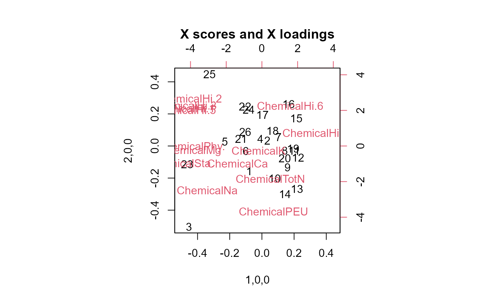
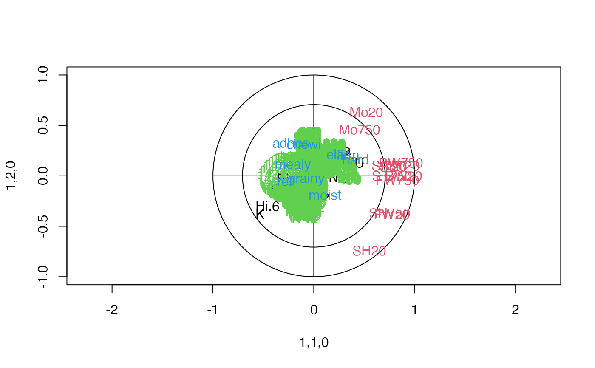
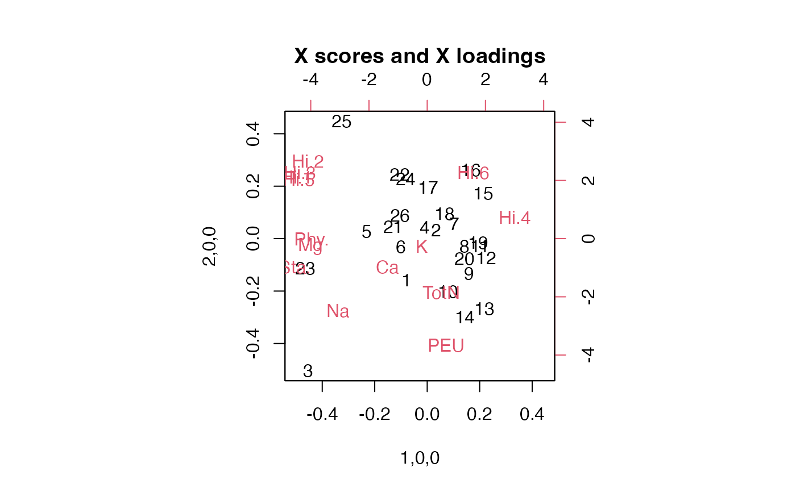

Extraction of scores and loadings and adaptation of scoreplot,
loadingplot and biplot from package pls for sopls objects.
# S3 method for sopls
loadings(object, ncomp = "all", block = 1, y = FALSE, ...)
# S3 method for sopls
scores(object, ncomp = "all", block = 1, y = FALSE, ...)
# S3 method for sopls
scoreplot(
object,
comps = 1:2,
ncomp = NULL,
block = 1,
labels,
identify = FALSE,
type = "p",
xlab,
ylab,
...
)
# S3 method for sopls
loadingplot(
object,
comps = 1:2,
ncomp = NULL,
block = 1,
scatter = TRUE,
labels,
identify = FALSE,
type,
lty,
lwd = NULL,
pch,
cex = NULL,
col,
legendpos,
xlab,
ylab,
pretty.xlabels = TRUE,
xlim,
...
)
# S3 method for sopls
corrplot(
object,
comps = 1:2,
ncomp = NULL,
block = 1,
labels = TRUE,
col = 1:5,
plotx = TRUE,
ploty = TRUE,
...
)
# S3 method for sopls
biplot(
x,
comps = 1:2,
ncomp = "all",
block = 1,
which = c("x", "y", "scores", "loadings"),
var.axes = FALSE,
xlabs,
ylabs,
main,
...
)sopls object
integer vector giving components from all blocks before block (see next argument).
integer indicating which block to extract components from.
logical extract Y loadings/scores instead of X loadings/scores (default = FALSE).
further arguments sent to the underlying plot function(s)
integer vector giving components, within block, to plot (see Details regarding combination of blocks).
character indicating if "names" or "numbers" should be plot symbols (optional).
logical for activating identify to interactively identify points.
character for selecting type of plot to make. Defaults to "p" (points) for scatter plots and "l" (lines) for line plots.
character text for x labels.
character text for y labels.
logical indicating if a scatterplot of loadings should be made (default = TRUE).
Vector of line type specifications (see par for details).
numeric vector of line width specifications.
Vector of point specifications (see points for details).
numeric vector of plot size expansions (see par for details).
integer vector of symbol/line colours (see par for details).
character indicating legend position (if scatter is FALSE), e.g. legendpos = "topright".
logical indicating if xlabels should be more nicely plotted (default = TRUE).
numeric vector of length two, with the x limits of the plot (optional).
locical or integer/character. Whether to plot the \(X\) correlation loadings, optionally which block(s). Defaults to TRUE.
logical. Whether to plot the \(Y\) correlation loadings. Defaults to TRUE.
sopls object
character for selecting type of biplot ("x" = default, "y", "scores", "loadings").
logical indicating if second axes of a biplot should have arrows.
character vector for labelling first set of biplot points (optional).
character vector for labelling second set of biplot points (optional).
character for setting the main title of a plot.
If comps is supplied as a list for scoreplot, it is assumed that its elements refer to each of the
blocks up to block number block. For instance comps = list(1, 0, 1:2) will select 1 component from the first
block, no components from the second block and the first two components from the last block. This must be
matched by ncomp, specifying how many components were selected before block number block.
Overviews of available methods, multiblock, and methods organised by main structure: basic, unsupervised, asca, supervised and complex.
Common functions for computation and extraction of results are found in sopls_results.
#' @return The score and loading functions return scores and loadings, while plot functions have no return (except use of 'identify').
data(potato)
so <- sopls(Sensory ~ Chemical + Compression + NIRraw, data=potato, ncomp=c(5,5,5))
# Loadings
loadings(so, ncomp=c(3), block=2)[, 1:3]
#> 3,1,0 3,2,0 3,3,0
#> FW20 2.899592 -2.25518600 -1.181401337
#> BW20 3.253005 -0.34748421 0.211162557
#> ST20 3.232381 0.40110809 -0.042460853
#> SH20 2.450377 -3.89643043 -1.273002388
#> Mo20 1.471707 2.63506368 -0.950867682
#> Sl20 2.726383 0.26885897 0.002480118
#> FW750 3.159111 -0.21770583 0.551632015
#> BW750 2.892770 0.48171215 0.667057573
#> ST750 2.851268 0.01964503 0.173617022
#> SH750 3.370985 -1.53962601 1.348135225
#> Mo750 1.173309 1.92291778 -1.496492798
#> Sl750 2.539819 0.46410991 -0.071181501
# Scores
scores(so, block=1)[, 1:4]
#> 1,0,0 2,0,0 3,0,0 4,0,0
#> 1 -0.078379126 -0.15756558 -0.030150796 -0.08882899
#> 2 0.033599245 0.03345139 -0.264837392 -0.02082345
#> 3 -0.454087240 -0.50387774 -0.257625630 0.24822188
#> 4 -0.010144029 0.04409907 0.254739277 0.34206013
#> 5 -0.231320589 0.02813994 0.331647163 -0.15209020
#> 6 -0.100806072 -0.03203490 0.058511494 -0.07824489
#> 7 0.103759602 0.05587580 0.171495995 0.13245956
#> 8 0.142341829 -0.02952316 0.135315864 0.17766566
#> 9 0.160175421 -0.13395363 0.067732083 -0.34567441
#> 10 0.078862890 -0.20282246 0.065251294 -0.21205811
#> 11 0.200245777 -0.02882659 0.149667777 -0.08872396
#> 12 0.223602068 -0.07321286 -0.029748834 -0.22950703
#> 13 0.217320106 -0.26815383 0.096949900 -0.10070260
#> 14 0.142847549 -0.29951537 0.077252287 0.24996525
#> 15 0.213820293 0.17228886 -0.461863019 -0.11767172
#> 16 0.164964325 0.26005269 -0.323577542 0.10235857
#> 17 0.002967383 0.19480792 -0.246885356 0.19701818
#> 18 0.066258347 0.09356886 -0.228532411 0.20484080
#> 19 0.194213760 -0.01568159 0.132000297 0.14447620
#> 20 0.141301554 -0.07654188 0.049224760 0.26084474
#> 21 -0.129888279 0.04471652 0.038982799 -0.30565064
#> 22 -0.105636544 0.24576605 -0.030041538 -0.14535670
#> 23 -0.464479945 -0.11433433 -0.194275154 -0.06714686
#> 24 -0.082441922 0.22751259 0.233417343 0.13675311
#> 25 -0.325181587 0.44765983 0.208213841 0.07217114
#> 26 -0.103914818 0.08810440 -0.002864502 -0.31635566
# Default plot from first block
scoreplot(so)
# Second block with names
scoreplot(so, ncomp=c(3), block=2, labels="names")
# Scatterplot matrix
scoreplot(so, ncomp=c(3,2), block=3, comps=1:3)
# Combination of blocks (see Details)
scoreplot(so, ncomp=c(3,2), block=3, comps=list(1,0,1))
# Default plot from first block
loadingplot(so, scatter=TRUE)
# Second block with names
loadingplot(so, ncomp=c(3), block=2, labels="names", scatter=TRUE)
# Scatterplot matrix
loadingplot(so, ncomp=c(3,2), block=3, comps=1:3, scatter=TRUE)

# Correlation loadings
corrplot(so, block=2, ncomp=1)

# Default plot from first block
biplot(so)
